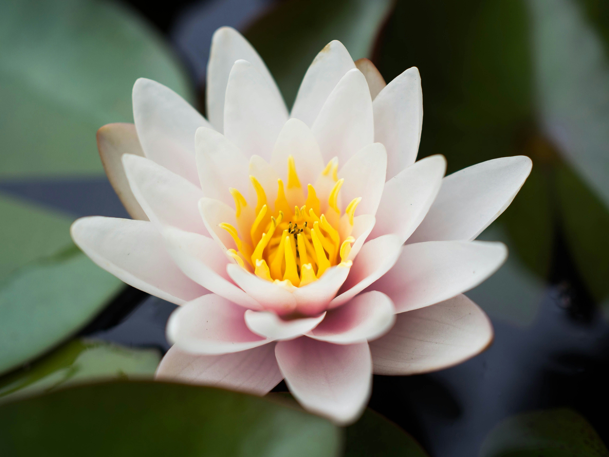
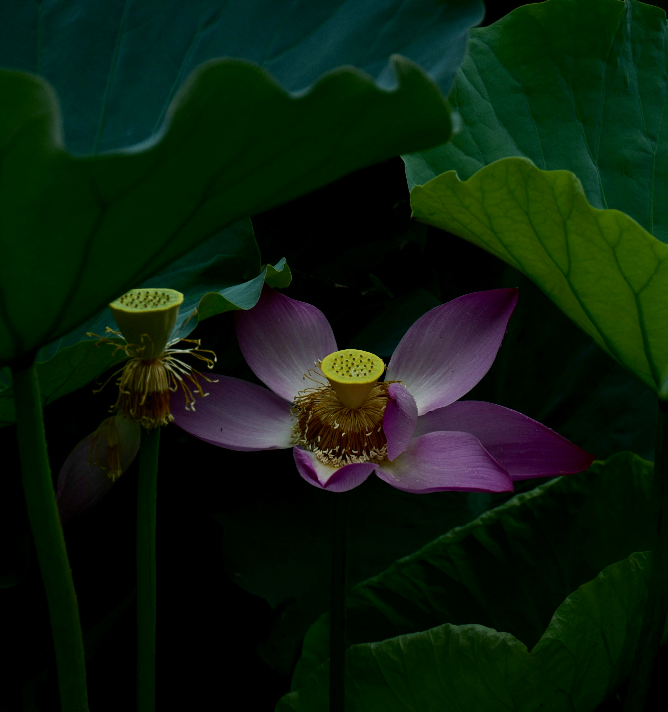
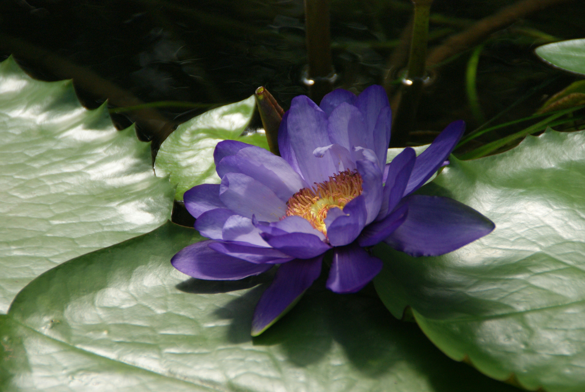

Multi-faced flower
There are over 3,500 types of tulips around the world.
Tulip Origins
Tulips are native to central Asia and Turkey.
Perennial Plant
They die after blooming before returning to a bulb underground.
Flower of New beginnings and Renewal
This symbolism is reflected in the flower due to its growth in Spring.

A Royal flower
Purple is symbolized as a color of royalty, luxury and admiration that's used for such occasions.

A spiritual flower
This flower is known for spiritual awakening and enlightenment.
